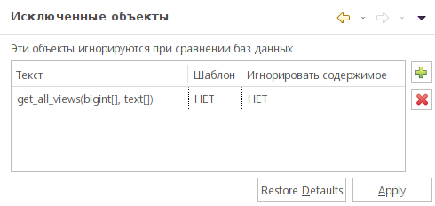

Объекты, которые не должны учитываться при сравнении элементов БД, можо указать на странице настроек pgCodeKeeper -> Исключенные объекты, указываются имена объектов.

После добавления объекта в список исключенных, можно выставить дополнительные настройки, которые влияют на исключение объекта при сравнении: